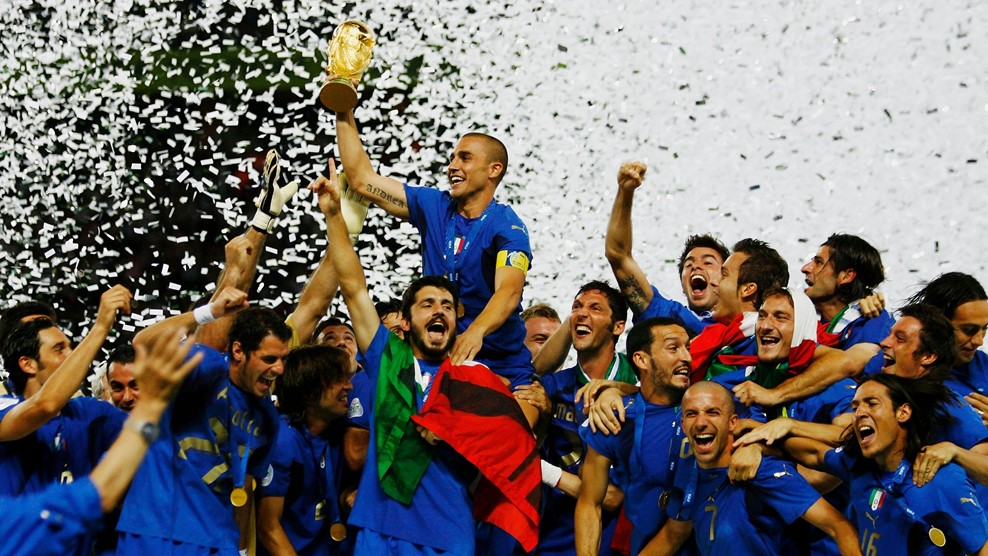

La Copa Mundial de la FIFA Alemania 2006 (en alemán: FIFA Fussball-Weltmeisterschaft Deutschland 2006) fue la XVIII edición de la Copa Mundial de Fútbol. Esta edición del evento se realizó en Alemania, entre el 9 de junio y el 9 de julio de 2006, siendo la segunda ocasión en que dicho país organizaba este evento tras el campeonato realizado en 1974 en la entonces Alemania Federal.El campeonato, que se inició el 9 de junio en el nuevo estadio Allianz Arena de Múnich, estuvo compuesto de dos fases: en la primera, se conformaron 8 grupos de 4 equipos cada uno, avanzando a la siguiente ronda los dos mejores de cada grupo. Los 16 equipos clasificados se enfrentaron en rondas eliminatorias hasta que los equipos de Italia y Francia se enfrentaron en la final realizada en el Estadio Olímpico de Berlín. Tras empatar 1-1 en el tiempo reglamentario y la prórroga, se realizó una tanda de penaltis para decidir al nuevo campeón, hecho que solamente había ocurrido previamente en la Copa Mundial de Fútbol de 1994. En esta instancia, Italia obtuvo por cuarta vez el trofeo tras derrotar al combinado galo por 5-3. De esta manera, Italia participó como campeón del mundo en la Copa FIFA Confederaciones 2009 que se realizó en Sudáfrica.
